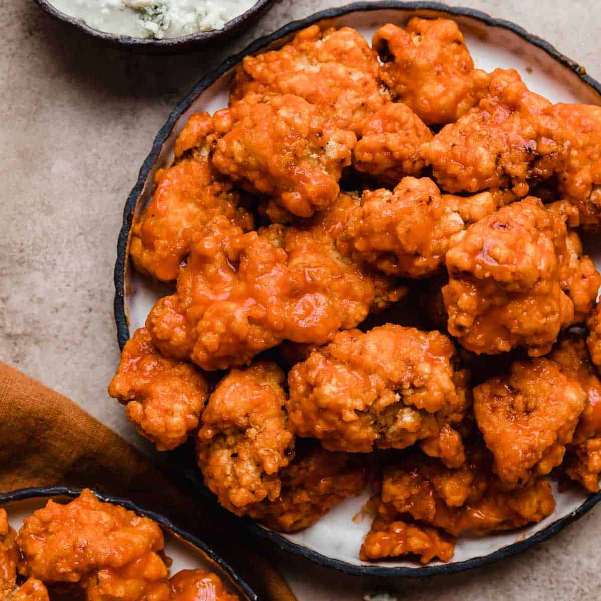

Buffalo Chicken Poppers

Description:
The finger-lickin goodness of a chicken.
So good you won't stop eating!
Ingredients:
for 10 poppers
- 2 boneless, skinless chicken breasts
- 2 teaspoons salt
- 1 teaspoon pepper
- 1 teaspoon garlic powder
- 1 teaspoon chili powder
- 1 cup flour(125 g)
- 3 eggs, beaten
- oil, for frying
- 2 tablespoons butter
- ½ cup hot sauce(120 mL)
How to cook your scrumdiliumptuous owo Buffalo Chicken Poppers:
- Slice chicken breasts into bite-sized chunks.
- Combine the chicken with the salt, pepper, garlic powder, and chili powder, mixing until evenly seasoned.
- Place the flour and eggs into separate bowls.
- Dip a piece of chicken into the flour, then the egg, then back into the flour. Repeat with the rest of the chicken.
- Heat oil in a large pot over medium-high heat.
- Fry the chicken pieces until deep-golden brown and crispy.
- Set aside on a paper towel to drain.
- In a pan over medium heat, cook the butter and the hot sauce until bubbly.
- Toss the chicken in the sauce until evenly glazed.
- Enjoy!